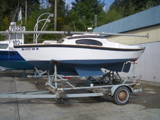

| Main | CB | FB | Fast | Size | Keel | Ballast | Point | Tall | Race | Lean | Ocean |
|
|
|
Most keeled sailboats have 6 feet or more of draft and are heavy. This means that they will hit bottom before the crew can wade to safety ashore. In power boating, when there is a seaworthiness problem, you head for the beach, ground the vessel, and thereby save both the vessel and crew. This is not usually possible with deep keeled boats because they will topple while grounding (keel over) and can topple in breakers that in time will pound the vessel to oblivion. An exception are the newer fixed fin keels that are designed to break away in a grounding. |
"After all, for a seaman, to scrape the bottom of the thing that's supposed to float all the time under his care is the unpardonable sin. No one may know of it, but you never forget the thump-eh? A blow on the very heart. You remember it, you dream of it, you wake up at night and think of it--years after--and go hot and cold all over."Joseph Conrad
Heart of Darkness pg 62
The following information is conveyed from the History of American Sailing Ships, a book published in 1935.
This is a rather common book on the west coast of the US, in spite of its age, for folks who are studying sailboat design. The story of Onkabye and Gimcrack is found in Chapter 7 of the book.
Onkabye (or Oncabye) is thought to be the start of the evolution of American Sailing Yachts. The name means 'dancing feather'; Gimcrack in the 1840s was slang for 'useless thing'.
Onkabye, as her name implies, was a radical departure from the heavy keel-pilot schooners used for the sport of yachting in the New York and Boston areas. She was a 90 foot internally ballasted centerboarder. She was very fast, stiff, and smart, and to be used only for pleasure purposes, racing in particular.
Onkabye, didn't last long as a pleasure boat. In about 3 years the US Navy made an offer and the experiments that the owner was conducting regarding external ballast tacked onto the side of the hull and rolling in heavy seas, stopped. Rigged for war, Onkabye was a slow sailboat, very sensitive to the extra weight. She was lost 5 years later on a reef. Because of Onkabye, a very big distinction between the hull forms of a commercial Naval sailing vessel and a yacht was made by 1935.
Soon after the Navy purchased Onkabye, her owners built Gimcrack. This 52 footer had a fixed fin of between 12 and 15 feet long. Gimcrack was quickly recognized as a failed experiment.
The owners of both boats when launched were the Stevens, sons of Colonel John Stevens, the engineer so responsible for steamships. They were considered hobby sailboat designers and "apparently desired to prove that a centerboard vessel could be designed that would combine the advantages of both the keel and centerboard types and thus demonstrate the arguments of the supporters of the centerboard."
Interestingly, those supporters would later found the New York Yacht Club (NYYC) in the cabin of Gimcrack, the useless thing, on the afternoon of July 30, 1844. "Because of the shoal anchorage of the New York Yacht Club at Weehawken, later at 'the foot of Cort Street' on the Brooklyn shore and on the Jersey side from Commnipaw to Kill van Kull, the shallow centerboard yacht was most popular with NYYC boat owners."
Gimcrack placed third in the first NYYC regatta which was considered a failure for what was meant to be the flagship of the new club. Maria, Americas first true racing sailboat, was her successor. Maria was recognized as faster than America the vessel which started the Americas cup. Maria's boards were off the centerline.
"When Leontes, in Shakespeare's The Winter's Tail, confesses his inability to be decisive with the metaphore 'I am a feather for each wind that blows' he does so with regret and self-admonition. We think the metaphor works equally well for sailors..."Carolyn & Bob Mehaffy
Northwest Yachting February 2OO5 pg 62
The inability to be decisive in sailing yacht design then is as today. Supporters of the deep keel were concentrated in Boston, with its deep water anchorage, back in the days of Gimcrack and Onkabye. And today sailors argue the merrits of centerboards and fixed deep keels just as then with New York Yacht Club members still favoring centerboarders such as the Swan 45.
The bottom line is that the notion that Naval Architects do power and not sail boats and that a power boat designer is only a hobbyist if doing a sail boat is traced to day one of the evolution of the American sailing yacht. The separation between sailors and powerboaters, rag baggers and stink pots, was orchestrated right there. See Olin Stephens for more.
The basic sailing books often point out that a glass bottle will survive a hurricane. Put an uncapped empty bottle with an attached keel in a shallow wave situation, allow the keel to hit bottom, and eventually the bottle will flood and sink. That is what happens with keeled sailboats. You do not even need heavy surf or a weather situation.
 Anchor a deep keeled boat in
shallow water, fail to plug the through hulls
(outlets through the hull for engine and galley uses) or close hatches,
let her
topple with the tide and when the tide comes in the keeled
boat will flood. At high tide it is a sunk wreck. During my first year in
Murrelet I personally witnessed this phenomenon. It was an eye opener. I
certainly will purchase insurance when chartering deep keeled
sailboats.
Anchor a deep keeled boat in
shallow water, fail to plug the through hulls
(outlets through the hull for engine and galley uses) or close hatches,
let her
topple with the tide and when the tide comes in the keeled
boat will flood. At high tide it is a sunk wreck. During my first year in
Murrelet I personally witnessed this phenomenon. It was an eye opener. I
certainly will purchase insurance when chartering deep keeled
sailboats.
A second weather unrelated situation is the keeled sailboat with low freeboard. You can put the rail in the water until water reaches the centerline or an open hatch and the vessel will flood and eventually topple. If it is a heavy displacement hull. it will sink, putting its occupants in open water, possibly miles from shore.
As the story of Onkabye and Gimcrack demonstrates, deep fixed keel sailboats are part of a long, important and interesting experimental period in yacht design. I respect their skilled sailors as I do those who sail square riggers. But for recreational boating, their continued use needs to be seriously questioned.
Unlicensed keelboat sailors can not be expected to know that commercial fishing vessels have the right of way (an exception to the usual rule favoring the vessel under sail) and that their keels will snag lines with fisherman/ diver loss of life resulting. There is also the damage keels do to coral reefs. It is a serious matter. Putting a novice in a bare keelboat charter is asking for trouble.
Center boarded light displacement hull sail boats (like Mac26x boats) should be more available for chartering. Mac26x cruisers are similar to beach balls with ballast to keep them upright. The 1,400 pounds of water ballast and narrow hull of Mac26x cruisers provide the self-righting stability of a keel boats. Seaworthiness has to do with the vessel's ability to remain floating on the surface right-side up. In heavy weather the Mac26x centerboard and rudders can be retracted and like the beach ball in surf the vessel may bounce off the breakers over a reef that can pound a keeled sailboat out of existence. According to Don Dobs, author of Modern Cruising Under Sail, "Recent studies seem to contradict traditional arguments for the safety of long keels. One such study showed that these keels apparently drag when a boat slides sideways down a wave face, and trip the boat" (pg 151)." Keels usually comprise the backbone of a vessel. A backbone is often the definition of a keel. Hence, touch and goes and heavy seas probably weaken the hull of fixed keel boats overtime making unreinforced older craft ill suited for ocean crossing. Nonetheless, ocean crossing in a like new cruiser is viewed by Dobs as no more risky than freeway driving. Coastal ocean cruising is actually more risky than ocean crossing because the waves are larger and breaking near the coast and there are shallows.
When a beach ball grounds it often does so in shallow water that will not support pounding breakers. I have become confident that I can batten down Murrelet's hatches, hide below, retract the foils (centerboard and rudders) and ride any storm surge to calmer water or shallow water where I could drag anchor or beach as a beach ball would. Glass balls used for fishing nets do so. So do Zodiacs and other tenders.

Murrelet is a 5 ton by volume documentable vessel. She and all Mac26x boats delivered from the factory are foam filled so that they will act like a Zodiac in a storm, IE like a life raft. Hence, assuming I do not put several tons of lead pellets in her bilge, or bolt on a 2 ton keel, I do not need to be as concerned about being miles from shore. If needed the mast can be dropped on Mac26x cruisers thereby reducing weight aloft which is a contributor to capsizing. Even capsized Mac26x cruisers provide more shelter from exposure than life rafts. And of course the ability to motor above 10 MPH for 100 miles or more makes Murrelet nimble to avoid weather hazards. She should make passage as fast or faster than 60 plus foot sail boats. Fast passage is important in avoiding storms at sea. Once in harbor, Mac26x vessels can be lifted or trailered to dry storage or beached or at a minimum anchored close to a beach inside the storm breakers.
In March of 2002 I started telling those interested in Murrelet that she has a swing keel. This small twist of words appeared to endear me and my vessel to the PHRF keel boat racers who look forward to racing against my crew. Since MacGregor Yacht Corporation invented the swing keel, I figured it was OK to use the term in describing Mac26x cruisers. By April, however, the racing crews were well aware that Murrelet is a centerboarder. Centerboard cruisers use to have a special PHRF rule that prohibited racing without ballast. This rule, some racers speculated, was put in to keep boats that plane out of the competitions. Since many performance cruisers without water ballast now plane and in sufficient wind, on the down side of a swell, displacement hull sailboats surf which is a form of planing, the rule was not carried into the 2003 racing season. The racing sail boats are routinely modified prior to a race by leaving gear and even crew on shore in light wind conditions and I know of one captain that emptied his boat's fresh water tanks during a race.
"No other nation has put so much faith in bilge (or twin) keels as the British. Other countries have flirted with them, but we became so enamored with the concept that they were the first choice for anything less than about 36 feet."Practical Boat Owner
Buying A Second Hand Boat, April 2005, pg 54
 In
light
wind (less than 7 MPH) there is really no capsize
risk in a
Mac26x. Hence they are endorsed by the manufacturer for unballasted
operation under power and sail. Unlike other trailerable sailboats,
such as the MacGregor
26
classics,
the hard side chines on the X (in combination with the off centerline
water tank structure and duel rudders) form twin shallow keels so that
the boat tracks well under sail unballasted. Twin keels become more
effective with increased angle of heel, while a single keel becomes less
effective. The Stevens
experments regarding external ballast tacked onto the side of Onkabye's
hull could well have demonstrated this. It is observable on the Mac26x
when the ballast tanks are flooded. Blue Bird, the first twin keel
yacht, was built in 1920 by Lord Riverdale. She was 25 foot
and had twin rudders not unlike a Mac26x.
In
light
wind (less than 7 MPH) there is really no capsize
risk in a
Mac26x. Hence they are endorsed by the manufacturer for unballasted
operation under power and sail. Unlike other trailerable sailboats,
such as the MacGregor
26
classics,
the hard side chines on the X (in combination with the off centerline
water tank structure and duel rudders) form twin shallow keels so that
the boat tracks well under sail unballasted. Twin keels become more
effective with increased angle of heel, while a single keel becomes less
effective. The Stevens
experments regarding external ballast tacked onto the side of Onkabye's
hull could well have demonstrated this. It is observable on the Mac26x
when the ballast tanks are flooded. Blue Bird, the first twin keel
yacht, was built in 1920 by Lord Riverdale. She was 25 foot
and had twin rudders not unlike a Mac26x.
The notion that a bilge keeler is also a shallow draft vessel apparently doesn't hold true. The positive flotation Sadler 26 masthead sloops, which should be compared to Mac26x cruisers, (because they are unsinkable, use one-piece molding to form the interior, have an exceptionally ridged structure, and use Lewmar winches), had a fair amount of draft. The 3 feet six inches of draft made them just barely trailerable.
However these boats can stand upright on two legs when low tide makes that necessary and hence the twin keel form is the most desired of this David Harding design. David Harding also designed the Contessa 26, a cousin to the Folkboat, and like these vessels the Sadler 26 has circumnavigated the globe. Today PBO calls them superb all-rounders, brave little boats that are a joy to sail and implies that, in experienced hands, they are a match for today's crop of small performance cruisers (probably referring to the MacGregor 26 cruisers). pg 100 April 2005.
As mentioned previously, Laurent-Giles proposed twin keels for Trekka and while this keel form was rejected by Guzwell in favor of a bolt on centerline keel, Laurent-Giles was successful in getting the concept built on the twin keel Westerly Centaur 22s, about 15 years later. The Westerly Centaur 22s today are viewed as a breakthrough in modern boat building. They use asymmetric keels of 2 foot 2 inch size which were abandoned to gain windward performance such as is found on the Sadler 26. Note that windward performance of a twin keeler in rough water is superior to a deep single fin vessel because of the roll and pitch dampening abilities of the keels.

Twin keels assist in planing because they reshape the wave pattern to produce a flatter wake and can reduce the effort needed to break out from hull speed. The Mac26x cruiser is reinforced with an additional layer of fiberglass liminate that was reported to have been added by the manufacturer to absorb the pounding and reduce the vibrations on the hull that occur when the boat is being powered by motor at high speeds. Because the prop can work in clear water without turbulance from a centerline keel and/or rudder, handling is more efficient, less fuel is consumed, the boat is faster and can be operated better when the engine is in reverse. The topside of the Mac26x cruisers was modified post 1998 so it would be lighter this further reducing capsize potential. Hence I see little problem in racing unballasted when winds are light. Multihulls race under special rules but are not required to be ballasted and combined weighted-keel-water-ballasted vessels such as the Hunter HC50 and Guzwell's Endangered Species fill tanks only in heavy wind. In any case, the term swing keel is being reserved for a centerboard that has weight attached to the foil and I no longer use the term to describe Murrelet. Centerboard,
swing keel, or keel, new monohull sail
boat
purchasers should at least consider vessels like Sadlers, Potters, Etaps
and
MacGregors that have solid flotation. They should also choose thin rather
than wide monohulls. The thinner the hull, the more it is like a log in
that it is self righting and of course the quicker the righting the less
likely serious flooding. Such vessels, in the hands of competent
crew, are
the most seaworthy. Note - some ocean racers are wide rather than thin.
This is the result of artificial limitations on design, like maximum
water ballast and experimentation with canting keels that if canted to
the wrong side could cause capsize quickly in a thin hull. Without these
design
rules the vessels would be thinner. Nonetheless even the wide racers
present a thin form to the water when heeled modistly.
Centerboard,
swing keel, or keel, new monohull sail
boat
purchasers should at least consider vessels like Sadlers, Potters, Etaps
and
MacGregors that have solid flotation. They should also choose thin rather
than wide monohulls. The thinner the hull, the more it is like a log in
that it is self righting and of course the quicker the righting the less
likely serious flooding. Such vessels, in the hands of competent
crew, are
the most seaworthy. Note - some ocean racers are wide rather than thin.
This is the result of artificial limitations on design, like maximum
water ballast and experimentation with canting keels that if canted to
the wrong side could cause capsize quickly in a thin hull. Without these
design
rules the vessels would be thinner. Nonetheless even the wide racers
present a thin form to the water when heeled modistly.
In November of 2003, I finally caught up with one of the McKee Tasar crew.
Jonathan McKee keeps himself on the edge of sailing technology which today means canting keels, which he prefers to call swing keels. I think the swing term should be reserved for technology advanced by MacGregor Yachts and hence will stick with canting keel as the descriptor. An advocate for canting keels, McKee is active in a project that in two years will have a vessel called Genuine Risk (GR) running out of San Diego. That ship is to be a 94 foot ocean racer showcasing the canting keel technology.
Obvious once you become aware is that a canting keel does not provide lateral resistance. This implys that vessels using this technology will do poorly upwind. The fix on GR is to be a forward rudder.
In 2004 water ballast and canting keel technologies started being described as kinds of movable ballast. My Mac26x dealer is also a Schock dealer and the Schock 40 (which BWY doesn't yet sell) features a canting bulb keel and twin foils. The term movable ballast applies to both boats. But my dealer was not aware of that so I wasn't able to fully discuss the technology. Fortunately, in March of 2004, Sail magazine on page 110 proposed that canting keels are a superior form of movable ballast. The author was unaware that artificial limitations, discussed above, had encouraged some ocean racing designers to build wide water ballasted vessels.
"Wide boats with water ballast are very effective at generating stability at low angles of heel, but they are prone to capsize and are too stable when inverted; they can stay turtled indefinitely....A moveable keel can be an effective tool when righting a turtled boat."
Water ballasted boats need not be wide and the Mac26x is not prone to capsize. She is also self righting. To be fair, the author did note many of the canting compromises. These include loss of lateral resistance which limits sailing to downwind, the T-bulb configuration which is a "classic trap for crab pots and weed", and that canting technology is a rather expensive way to increase stability. With these one should add that canting keel vessels once capsized can sink and that the bulb on the fin is a large source of drag. Furthermore, I have yet to find a canting keel vessel that does not have an opening in the hull through which water can enter. They are severly limited on the interior because of the mechanisms necesary for the technology. Then there is the weight. Water ballast is moved off the boat in light wind. This advantage is significant especially in doldrums.
I have concluded that patent holders are high on the canting technology but sailors need not be. Of course it would not be difficult to add something like the CBTF canting bulb used by the Shock 40 to a mac26x. The forward foil is already in the correct position and a well for the canting mechanism could be added without modifying the ballast tank because the components for the tank are far from centerline. But I think water ballast superior.
A group of keel boater's peppering McKee at a sailing society meeting about Mini-Transat racing couldn't help vocalizing how similar McKee's mini boat looks to a Macgregor 26 (x). Sailing Society mates later confirmed that I had heard the comment. It pleased me very much. I have no idea who made the comment but it was a highlight of the evening. You lift a rudder on the mini's just like you are instructed by the manuals to do with a Mac26x. McKee was encouraged to admit that he prefers sailboats that plane and mono hulls over keel boats and multy hulls. He reluctantly noted that his favorite boat is an Ozi 18? and couldn't help himself from commenting on a grounding incident a new-to-our-society keel boater had that weekend while retruning from a race (no damage fortunately). As an aside - it is now possible to have pizza delivered to a grounded vessel - this owing to cell phone and gps technology. The mini-transat boats are half the weight of a Mac26x unballasted. Owing to a "Box" rule they have become wide over the years but can not be more than 22 feet long. Stability comes from the wide beam but more from moving solid weight - gear, water, food etc - to the windward side, according to McKee. Any sail plan is allowed within the box rule.
In sufficient seas all boats can capsize. Today small racing and ocean cruising sailboats, similar to Mac26x vessels, are rigged to withstand capsizing, the most seaworthy righting themselves quickly, like a log, rigging undamaged. This is in contrast to vessels prior to the 1970s where solid ballast was added in amounts so large that the boats would sink when flooded. Solid ballast weight even today is mistakenly believed to be better insurance against capsize than water ballast. The next tab analyzes water and solid ballast.
|
|
|
|
|
Frank & Lisa Mighetto - 1260 NE 69th St. Seattle, WA 98115 - (206) 525-1458 voice and fax
mighetto@eskimo.com - Internet email address
mighetto@compuserve.com - Internet email address or 72154,3467 from within Compuserve
 One of the great things about keels is stability but it takes a skilled
captain and crew to keep a deep keeled boat seaworthy for 20 and even
30+ years. Hence
older deep keel boats in like new condition, such as in the slide show
(click on the photo to the left to start) are to
be admired.
One of the great things about keels is stability but it takes a skilled
captain and crew to keep a deep keeled boat seaworthy for 20 and even
30+ years. Hence
older deep keel boats in like new condition, such as in the slide show
(click on the photo to the left to start) are to
be admired.